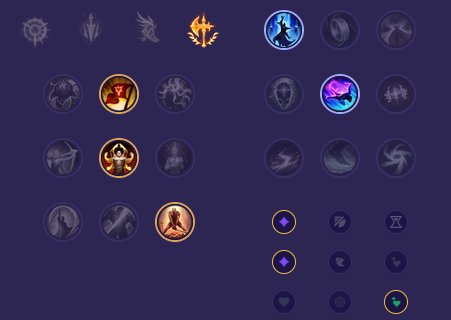

Starter: Tarcza Dorana Mikstura Zdrowia Core Bulid: Łamacz Falangi Nagolenniki Berserkera Widmowy Tancerz Full Bulid: Śmiertelne Przypomnienie Pancerz Umrzyka Taniec Śmierci

Słaby przeciwko: - Kayle - Camille - Gangplank - Vayne - Quinn - Warwick Dobry przeciwko: - Jax - Zaahen - Renekton - Riven - K'Sante - Ambessa